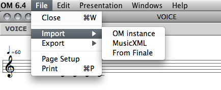
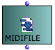
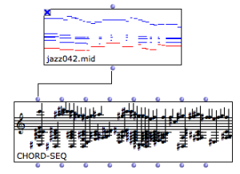
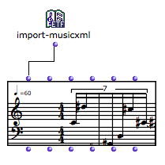
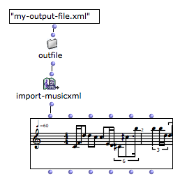
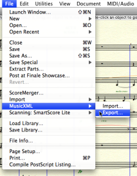

OpenMusic DocumentationHiérarchie de section : OM 6.6 User Manual > Score Objects > Export / Import > Import
OpenMusic DocumentationHiérarchie de section : OM 6.6 User Manual > Score Objects > Export / Import > Import
Navigation : page précédente | page suivante
Attention, votre navigateur ne supporte pas le javascript ou celui-ci à été désactivé. Certaines fonctionnalités de ce guide sont restreintes.
Import
Importing OM musical objects from external files can be done from the boxes' contextual menu, orfrom the score editors (menu File / Import).

Import/Export Formats and Generalities
Other possibilities exist using the OM patch boxes and objects, which are detailed in the next sections.
MIDI Import
The easiest way to import MIDI data in OM is to instanciate a MIDIFile box. Several options are possible :
|

|
Lock the Box
Remember to lock the box after the file is loaded, in order to avoid initializing it again at every subsequent box evaluation.
Evaluating/Locking Boxes
The MIDIfile box can then be connected to a chord-seq or multi-seq in order to convert the data to OM musical object formats. |

|
MIDI to Voice/Poly
Importing a MIDI file to a voice or poly object is not straightforward since MIDI has no rhythmic information. An approximate quantification will be performed using the metric information available.
About Quantification
MusicXML Import
MusicXML files can be imported and loaded into voice or poly objects from the Import menus or using the import-musicxml box.
At evaluation, the import-musicxml box opens a file chooser dialog allowing to select a file to import. |

|
An optional input allows to specify the file pathname directly in the patch editor. |

|
More About Pathnames in OM
Import-MusicXML Output Value
The import-musicxml output is always a POLY object. If a VOICE is connected, only the first voice of the imported score will be loaded.
Creating a MusicXML file from Finale
MusicXML files can be created by Finale via the |

|
{kind=link}
Références :
Plan :
Navigation : page précédente | page suivante
A propos...(c) Ircam - Centre Pompidou